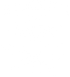
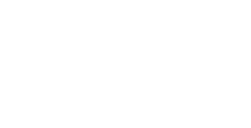

Veja os sites que já estão no ar e escolha o tamanho que combina com o seu negócio. Preço fechado, sem mensalidade.


A Conect+ resolve isso para você.
Quando alguém quer resolver alguma coisa, a primeira parada é o Google. Se a sua empresa não tem onde ser encontrada ali, ela some da conta bem antes de o cliente escolher com quem gastar.
Talvez você ainda não tenha site. Talvez tenha um que ninguém visita, feito às pressas anos atrás e que hoje você nem manda pros clientes. Dá no mesmo: quem procurou hoje encontrou outro e fechou com ele.
É isso que a gente faz aqui, e só isso. Site sob medida, feito do zero pro seu negócio, rápido no celular e montado pra ser achado no Google. Preço fechado, sem mensalidade.
Veja alguns de nossos trabalhos
Os sites que passaram ali em cima estão no ar agora, rodando para clientes da casa. É esse tipo de projeto que sai daqui. Você paga uma vez, o site é seu, e ninguém te cobra aluguel pra ele continuar existindo.
A Conect+ vem do tráfego pago. Todo dia a gente vê o que faz uma pessoa clicar, confiar e chamar no WhatsApp. O seu site já nasce com isso dentro.
Quem desenha o seu site roda Meta Ads e Google Ads todo dia. Cada seção é pensada pro cliente que chega pelo anúncio, não pra enfeitar.
O site sai com o Pixel do Meta e o Google configurados. Cada formulário enviado e cada clique no WhatsApp fica contado: você sabe o que o site trouxe, em vez de achar.
Muita gente já pergunta pro ChatGPT antes de pesquisar no Google. O seu site sai com as informações organizadas do jeito que o Google e as inteligências artificiais leem.
Nenhum site sai de template. Design, texto e animação são feitos pro seu negócio, e ninguém confunde a sua empresa com a do concorrente.
01 · Agora mesmo
Neste minuto, alguém na sua cidade está digitando no Google exatamente o que você vende. Ele não vai ler dez resultados. Vai abrir os primeiros, escolher o que passa mais confiança e chamar no WhatsApp. Se esse não for você, a venda aconteceu do mesmo jeito. Só que na empresa do lado.
02 · O prejuízo que não aparece
Cliente perdido não deixa recado. Não liga para reclamar, não aparece no extrato, não entra em relatório nenhum. Ele só some. Um hoje, outro amanhã, e o seu concorrente, que talvez nem faça melhor que você, fica com o serviço por um motivo só: ele estava lá quando o cliente procurou.
Perfil em rede social não aparece quando alguém pesquisa no Google. E quem chega por lá quer ver endereço, preço e um jeito rápido de falar com você.
Página lenta, quebrada no celular ou esquecida desde a inauguração diz ao cliente que a empresa também parou no tempo. Ele fecha a aba em segundos.
Boca a boca é ótimo, mas depende de alguém lembrar de você na hora certa. O Google está aberto todos os dias, inclusive quando ninguém lembra.
O problema quase nunca é a qualidade do seu trabalho. É que o cliente decide antes de te conhecer.
03 · O que muda com um site de verdade
Um site bem feito trabalha como o seu melhor vendedor: atende de madrugada, responde a mesma dúvida cem vezes sem perder a paciência e entrega o cliente já decidido no seu WhatsApp.
Páginas montadas do jeito que o Google entende, para a sua empresa estar na busca quando o cliente procura pelo que você faz.
Texto na língua do seu cliente, provas no lugar certo e abertura rápida no celular, que é onde a decisão acontece.
Botão de WhatsApp e formulário sempre à mão. Quem já decidiu não precisa caçar um jeito de falar com você.
04 · Sem letra miúda
Nada de mensalidade para o site continuar existindo. Você paga uma vez, o site fica com você e ninguém te prende por contrato.
De R$877 a R$2.497, conforme o tamanho da operação. Você sabe o valor antes de começar, sem surpresa no meio do caminho.
De 4 a 15 dias úteis, dependendo do pacote. O seu cliente não espera, e o seu site também não deveria esperar.
Precisou trocar um preço, um texto ou uma foto? Você fala direto com quem fez o seu site.
Os sites que você viu ali em cima estão no ar agora, trabalhando para clientes da casa.
05 · A pergunta que importa
Amanhã de manhã, alguém vai pesquisar pelo que você faz. Isso não é possibilidade, é rotina. A única coisa que ainda está em aberto é como essa busca termina.
Quando esse cliente procurar, ele vai encontrar a sua empresa ou a do seu concorrente?
Veja o que os nossos clientes satisfeitos têm a dizer.
“Precisava montar toda a estrutura online do meu workshop do zero. O Kaique entendeu o que eu precisava e cuidou de tudo. Hoje vendo minhas turmas sem correr atrás.”
“A gente precisava de um site que representasse o espaço de verdade. Veio muito além do que eu esperava, e passa exatamente a imagem que a gente quer.”
“Precisava montar toda a estrutura online do meu workshop do zero. O Kaique entendeu o que eu precisava e cuidou de tudo. Hoje vendo minhas turmas sem correr atrás.”
“A gente precisava de um site que representasse o espaço de verdade. Veio muito além do que eu esperava, e passa exatamente a imagem que a gente quer.”
“Precisava montar toda a estrutura online do meu workshop do zero. O Kaique entendeu o que eu precisava e cuidou de tudo. Hoje vendo minhas turmas sem correr atrás.”
“A gente precisava de um site que representasse o espaço de verdade. Veio muito além do que eu esperava, e passa exatamente a imagem que a gente quer.”
“Precisava montar toda a estrutura online do meu workshop do zero. O Kaique entendeu o que eu precisava e cuidou de tudo. Hoje vendo minhas turmas sem correr atrás.”
“A gente precisava de um site que representasse o espaço de verdade. Veio muito além do que eu esperava, e passa exatamente a imagem que a gente quer.”
“Precisava montar toda a estrutura online do meu workshop do zero. O Kaique entendeu o que eu precisava e cuidou de tudo. Hoje vendo minhas turmas sem correr atrás.”
“A gente precisava de um site que representasse o espaço de verdade. Veio muito além do que eu esperava, e passa exatamente a imagem que a gente quer.”
“Precisava montar toda a estrutura online do meu workshop do zero. O Kaique entendeu o que eu precisava e cuidou de tudo. Hoje vendo minhas turmas sem correr atrás.”
“A gente precisava de um site que representasse o espaço de verdade. Veio muito além do que eu esperava, e passa exatamente a imagem que a gente quer.”
“A gente vivia de indicação e não tinha onde mostrar o serviço pra quem ainda não conhecia. Agora quem procura no Google acha a empresa e já chega pedindo orçamento.”
“Minha loja dependia demais de indicação. Desde que comecei com a Conect+, chega cliente novo todo mês e o faturamento ficou muito mais previsível.”
“A gente vivia de indicação e não tinha onde mostrar o serviço pra quem ainda não conhecia. Agora quem procura no Google acha a empresa e já chega pedindo orçamento.”
“Minha loja dependia demais de indicação. Desde que comecei com a Conect+, chega cliente novo todo mês e o faturamento ficou muito mais previsível.”
“A gente vivia de indicação e não tinha onde mostrar o serviço pra quem ainda não conhecia. Agora quem procura no Google acha a empresa e já chega pedindo orçamento.”
“Minha loja dependia demais de indicação. Desde que comecei com a Conect+, chega cliente novo todo mês e o faturamento ficou muito mais previsível.”
“A gente vivia de indicação e não tinha onde mostrar o serviço pra quem ainda não conhecia. Agora quem procura no Google acha a empresa e já chega pedindo orçamento.”
“Minha loja dependia demais de indicação. Desde que comecei com a Conect+, chega cliente novo todo mês e o faturamento ficou muito mais previsível.”
“A gente vivia de indicação e não tinha onde mostrar o serviço pra quem ainda não conhecia. Agora quem procura no Google acha a empresa e já chega pedindo orçamento.”
“Minha loja dependia demais de indicação. Desde que comecei com a Conect+, chega cliente novo todo mês e o faturamento ficou muito mais previsível.”
“A gente vivia de indicação e não tinha onde mostrar o serviço pra quem ainda não conhecia. Agora quem procura no Google acha a empresa e já chega pedindo orçamento.”
“Minha loja dependia demais de indicação. Desde que comecei com a Conect+, chega cliente novo todo mês e o faturamento ficou muito mais previsível.”
Conta o que o seu negócio faz e o que você precisa. Devolvo o escopo e o preço por escrito, sem compromisso.
O Kaique vai olhar a sua conta e te chamar no WhatsApp em até 24 horas nos dias úteis. Se preferir adiantar, pode chamar agora.
Chamar no WhatsApp